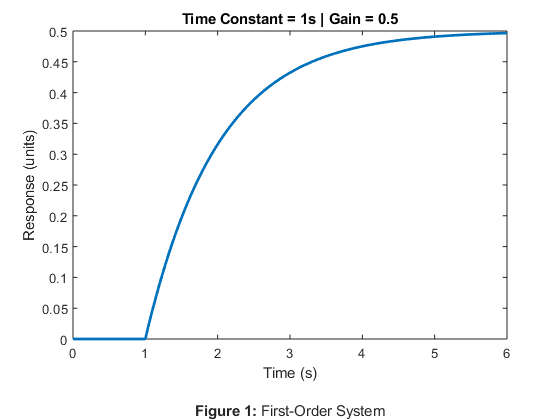
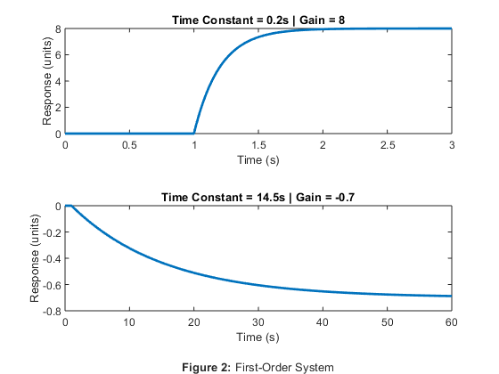
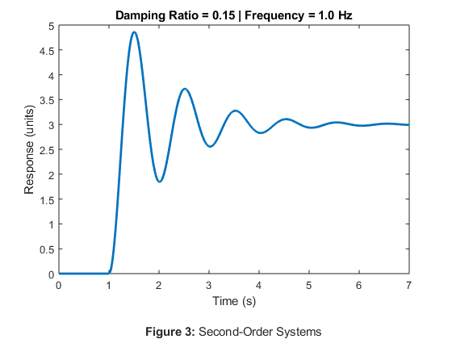
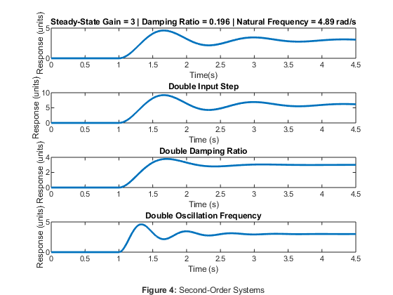
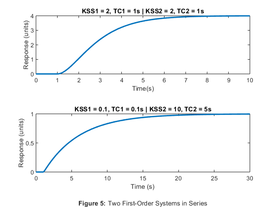
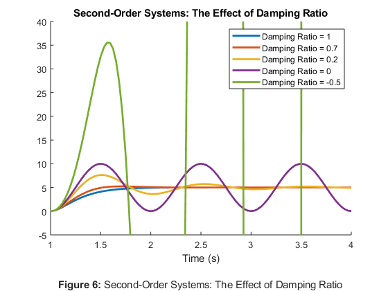
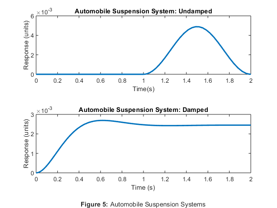

Contents
ME 422 HW 4
Rahul Goyal
January 30, 2019
% Reset clc; clear all; close all;
Problem 1
First-order systems with varying settling times and steady-state gains.
figure; sim('HW4_1'); plot(tout, simout, 'LineWidth', 2); title('Time Constant = 1s | Gain = 0.5'); xlabel({'Time (s)' '' % Figure label '\bfFigure 1: \rmFirst-Order System'}); ylabel('Response (units)'); xlim([0, 6]);
Problem 1 Questions
The system behaves as expected: With an input step size of 1, it approaches a final output change of 0.5 and takes about one second to reach 63.2% of this final output change.
To produce a steady-state response twice as great in the same time frame, the steady-state gain can be multiplied by 2.
To accelerate the system such that it responds twice as quickly as the original system, the time constant can be divided by 2.
Problem 2
First-order systems with varying settling times and steady-state gains.
figure; % Time Constant = 0.2s | Gain = 8 sim('HW4_2A'); subplot(2, 1, 1); % 2 rows, one column, first graph plot(tout, simout, 'LineWidth', 2); title('Time Constant = 0.2s | Gain = 8'); xlabel('Time (s)'); ylabel('Response (units)'); xlim([0, 3]); % Time Constant = 14.5s | Gain = -0.7 sim('HW4_2B'); subplot(2, 1, 2); % 2 rows, one column, second graph plot(tout, simout, 'LineWidth', 2); title('Time Constant = 14.5s | Gain = -0.7'); xlabel({'Time (s)' '' % Figure label '\bfFigure 2: \rmFirst-Order System'}); ylabel('Response (units)'); xlim([0, 60]);
Problem 3
Second-order system with a steady-state gain of 3, damping ratio of 0.15 and natural frequency of 1 Hz.
figure; sim('HW4_3'); plot(tout, simout, 'LineWidth', 2); title('Damping Ratio = 0.15 | Frequency = 1.0 Hz'); xlabel({'Time (s)' '' % Figure label '\bfFigure 3: \rmSecond-Order Systems'}); ylabel('Response (units)'); xlim([0, 7]);
Problem 3 Questions
The system behaves as expected. With a steady-state gain of 3, damping ratio of 0.15, and natural frequency of 1 Hz, the system response matches the hand calculations, which expect a steady-state gain of 3, oscillation frequency of 0.989 Hz, expected overshoot of 62.1%.
Problem 4
Second-order systems with a steady-state gain of 3 and varying input steps, damping ratios, and oscillation frequencies.
figure; % Steady-State Gain = 3 | Damping Ratio = 0.196 | Natural Frequency = 4.89 rad/s sim('HW4_4A'); subplot(4, 1, 1); % 2 rows, one column, first graph plot(tout, simout, 'LineWidth', 2); title('Steady-State Gain = 3 | Damping Ratio = 0.196 | Natural Frequency = 4.89 rad/s'); xlabel('Time(s)'); ylabel('Response (units)'); xlim([0, 4.5]); % Double Input Step sim('HW4_4B'); subplot(4, 1, 2); % 4 rows, one column, second graph plot(tout, simout, 'LineWidth', 2); title('Double Input Step'); xlabel('Time (s)'); ylabel('Response (units)'); xlim([0, 4.5]); % Double Damping Ratio sim('HW4_4C'); subplot(4, 1, 3); % 4 rows, one column, third graph plot(tout, simout, 'LineWidth', 2); title('Double Damping Ratio'); xlabel('Time (s)'); ylabel('Response (units)'); xlim([0, 4.5]); % Double Oscillation Frequency sim('HW4_4D'); subplot(4, 1, 4); % 4 rows, one column, fourth graph plot(tout, simout, 'LineWidth', 2); title('Double Oscillation Frequency'); xlabel({'Time (s)' '' % Figure label '\bfFigure 4: \rmSecond-Order Systems'}); ylabel('Response (units)'); xlim([0, 4.5]);
Problem 4 Questions
The unit step response in Figure 4.3 has a steady-state gain of 3, overshoot of 53.3%, oscillation frequency of 4.83 rad/s, damping ratio of 0.196, and natural frequency of 4.93 rad/s. A simulation using these parameters in Simulink produces a unit step response similar to that of Figure 4.3.
Doubling the size of the input step causes the magnitude of the response to double.
Doubling the damping coefficient causes the step response to approach steady-state twice as quickly. The percent overshoot decreases compared to the original system -- it decreases from 55% to 26%.
Doubling the oscillation frequency causes the step response to both oscillate at twice the frequency and, as a side-effect, also approach steady-state twice as quickly. The percent overshoot remains the same as the original system.
Problem 5
Systems with two first-order systems in series.
figure; % Sys1Gain = 2, Sys1TC = 1s | Sys2Gain = 2, Sys2TC = 1s sim('HW4_5A'); subplot(2, 1, 1); % 2 rows, one column, first graph plot(tout, simout, 'LineWidth', 2); title('KSS1 = 2, TC1 = 1s | KSS2 = 2, TC2 = 1s'); xlabel('Time(s)'); ylabel('Response (units)'); xlim([0, 10]); % Sys1Gain = 0.1, Sys1TC = 0.1s | Sys2Gain = 10, Sys2TC = 5s sim('HW4_5B'); subplot(2, 1, 2); % 2 rows, one column, second graph plot(tout, simout, 'LineWidth', 2); title('KSS1 = 0.1, TC1 = 0.1s | KSS2 = 10, TC2 = 5s'); xlabel({'Time (s)' '' % Figure label '\bfFigure 5: \rmTwo First-Order Systems in Series'}); ylabel('Response (units)'); xlim([0, 30]);
Problem 5 Questions
The steady-state gain of the system is the product of the gains of each first-order system.
The second-order system constituted by the two first-order systems in series behaves in a similar manner to a first-order system. The response of the system does not oscillate and is similar to a first-order step response.
The response of the two different first-order systems in series resembles a first-order response more than that of the same first-order systems in series. The step-response has a gain equal to the product of the gains of each subsystem and a time constant equal to the sum of the time constants of each subsystem.
In essence, a system of two identical first-order systems in series is a critically damped second-order system, and a system of two different first-order systems in series is a an overdamped second-order system.
Problem 6
Second-order systems with varying damping ratios.
figure; hold on; sim('HW4_6A'); plot(tout, simout, 'LineWidth', 2); sim('HW4_6B'); plot(tout, simout, 'LineWidth', 2); sim('HW4_6C'); plot(tout, simout, 'LineWidth', 2); sim('HW4_6D'); plot(tout, simout, 'LineWidth', 2); sim('HW4_6E'); plot(tout, simout, 'LineWidth', 2); title('Second-Order Systems: The Effect of Damping Ratio'); xlabel({'Time (s)' '' % Figure label '\bfFigure 6: \rmSecond-Order Systems: The Effect of Damping Ratio'}); legend('Damping Ratio = 1', 'Damping Ratio = 0.7', ... 'Damping Ratio = 0.2', 'Damping Ratio = 0', 'Damping Ratio = -0.5'); xlim([1 4]); ylim([-5 40]);
Problem 8
figure; % Automobile Suspension System: Undamped subplot(2, 1, 1); % 2 rows, one column, second graph sim('HW4_8A'); plot(tout, simout, 'LineWidth', 2); title('Automobile Suspension System: Undamped'); xlabel('Time(s)'); ylabel('Response (units)'); xlim([0, 2]); % Automobile Suspension System: Damped subplot(2, 1, 2); % 2 rows, one column, second graph sim('HW4_8B'); plot(tout, simout, 'LineWidth', 2); title('Automobile Suspension System: Damped'); xlabel({'Time (s)' '' % Figure label '\bfFigure 5: \rmAutomobile Suspension Systems'}); ylabel('Response (units)'); xlim([0, 2]);